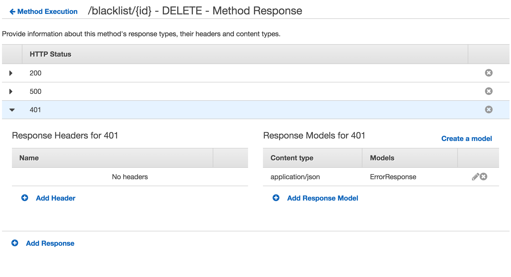
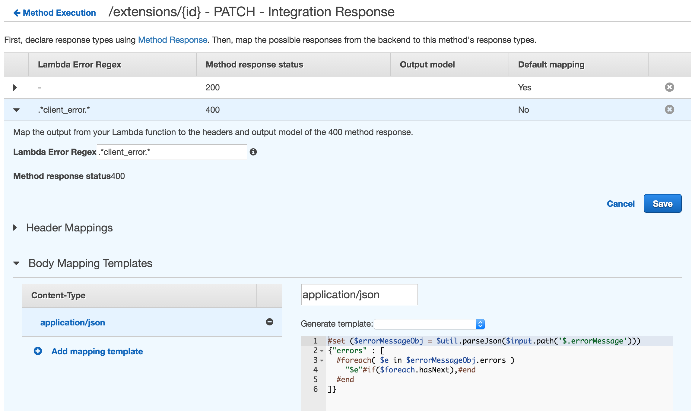

How to Return Custom HTTP Status codes from a Lambda function in Amazon API Gateway
TweetMaking use of HTTP Status codes to return better responses to your API Clients
HTTP status codes in a REST API are a very useful way to communicate operation results to the clients.
For example you should use the HTTP status 400s family of codes to signal client errors, meaning that the request has something that is syntactically or semantically wrong (also meaning that the client should probably never try the same request again because it will never work as it is).
And you should use the 500s family of errors to signal that something went wrong at the server side, so perhaps the client might return the operation later.
Successful requests that will eventually be processed (i.e: asynchronously) can be acked with 202 code, and synchronous requests can be acked with a 200 code.
In this article we're going to see how we can return ANY custom HTTP status CODE from Amazon API Gateway and also (in case of errors) send a generic error response based on a JSON Schema Model to our API clients.
How to combine a JSON Schema Model with HTTP Status Codes and Mapping Templates in API Gateway
The general idea of how all of this works is:
- A request is handled by a lambda function (e.g. PUT /users/1).
- The lambda function MUST return a string to API Gateway.
- The Resource/Method of your API has all the HTTP Status codes that can be returned.
- A regular expression is used by API Gateway to match the string returned from the lambda function, and map it to the right HTTP Status code.
- A mapping template translates the output into the right JSON Schema Model.
In the end, you will be returning a custom JSON string and a custom HTTP status code to your clients.
Creating a JSON Schema Model in API Gateway to return generic errors
Let's create a JSON schema so we can use it to return generic error responses to our clients like this:
The model can be defined in your API Gateway Console in the Models section of your API. Click on Create and enter the name (any name will do), and also the Content Type (that should be "application/json" in this case).
The schema can be something like this:
Now that we have the JSON Schema Model that we are going to use to return errors, let's see how to actually use it and combine it with different HTTP Status codes from our API.
Adding a HTTP Status code to the list of possible returned HTTP Codes of your API
You can't return a HTTP status code directly from your lambda code, you have to return a string, and this string will be later on associated and mapped to a specific status code (we'll see how in a moment). For now, let's add all the possible HTTP status code that we can return from our API.
Click on a Method in your Resource, you will see the Method Execution diagram/flow for it.
Then click on Method Response, and then click on Add Response and enter the HTTP status code that you want to return for this method. Add as many as you wish o rneed.
Once created you can click on the new row and optionally associate one or more headers and one or more response models (for example, you could have a model named ErrorResponse to generically return errors for 400s and 500s). In this case we can associate the model that we created before.
Here's an example of how a Method with several HTTP status codes defined looks like:
Associating API responses to a HTTP Status Code
Now that we have a JSON schema that defines how our errors are returned, and that we have setup all the possible status code returned by our API, let's see how to associate them. As stated earlier, the idea is to setup a regular expression that API Gateway can use to test the result of our lambda function and use the HTTP Status code mapped to it.
Click again on a Method in your Resource so you can go back to the Method Execution diagram.
Click on Integration Response and then on Add Integration Response.
In Lambda Error Regex you can enter a Java Regex Pattern that API Gateway can use to associate to specific HTTP status code (that you can specify in the Method response status drop down menu, those values are taken from all the available status code you setup in the Method Response screen).
Some examples that can be used in order to differentiate the status codes are:
- .*client_error.*
- .*server_error.*
For this to work, our lambda must return the regular expression text somewhere, as an example, we can make our lambda return something like this:
Of course this is a JSON object, that MUST be serialiazed to a string so API Gateway can actually run a regular expression against it. Note how we return the string client_error in the reason field and the actual errors that we want to send to our clients in the errors field.
So for example, when your lambda function returns a string that has the substring client_error or server_error it will return the correct http status code. Neat!
In the next step, we're going to setup a mapping template in API Gateway so this string is processed and transformed into a JSON object that is compatible with our JSON schema model.
Creating the API Gateway Mapping Template to return a generic error message
API Gateway uses the Apache Velocity Template in order to process results from the integration and send them back to the client.
In this code we are parsing the JSON string so we can get an object out of it, and then iterate through the errors returned so we can form the final string (a JSON object) that will be sent to our clients.
In the end, your error http status codes will look like this:
That's it! From now on as long as you include a substring recognicsed with a regular expression by API Gateway, and that you include the "errors" field that the example mapping template uses, you will be able to return custom http status codes and errors to your clients.